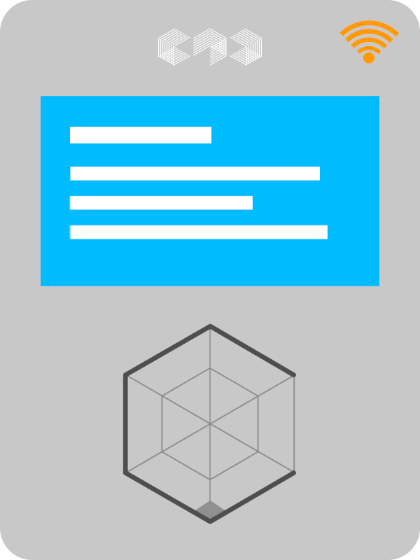

Ethische Bewertung von CoEnv
M. Richter, K. Schuh
Date: 3. Dezember 2021
Zusammenfassung:
Das Ziel dieses Textes ist es, unser Produkt CoEnv unter ethischen Gesichtspunkten zu bewerten. CoEnv ist ein modulares Ökosystem aus kleineren Produkten welche das Zusammenarbeiten in geteilten Umgebungen erleichtern sollen.
=100000
CoEnv ist ein im Rahmen des Kurses "Functional Objects for Shared Environmentsëntstandenes Konzept.
SShared Environmentsßind in unserer Definition Umgebungen oder Orte die Infrastruktur bieten welche Menschen bei der Arbeit unterstützt, meistens Strom, Internet, Küche, Toiletten, Arbeitsplätze und eventuell auch Werkstätten. Dabei gibt es in diesen Umgebungen meistens keine festen Hierarchien.
Einige Beispiele für Shared Environments wären HackerSpaces, Coworking Spaces und der Open Space des Studienganges Code&Context an der TH-Köln.
Die Vorteile von Shared Environments sind vielfältig. Sie ermöglichen ihren Nutzer*innen den direkten Austausch mit anderen Personen aus ihrem professionellen Umfeld [Cabral and Winden, 2016], die manche in ihrem normalen und besonders im Covid-19 Homeoffice, Arbeitsalltag missen [Lengen et al., 2021].
Aus unserer eigenen Erfahrung führen geteilte Umgebungen aber auch oft zu ambigen Situation in deren die gewünschte oder erlaubte Nutzung von Räumen und Objekten nicht geklärt ist und Unsicherheit entsteht.
In eher klassischen Büros ist diese erlaubte Nutzung von Objekten und Räumen relativ klar durch Hierarchien und Zuständigkeitsbereiche geregelt, wie z.B. "Das hier ist mein Büro", "Der Drucker gehört dem Büro der Grafikabteilungöder "Dieser Konferenzraum ist jeden Tag von 10 bis 11 Uhr für ein Stand-up Meeting belegt".
Unser Konzept setzt an diesem Punkt an, indem wir eine Symbolsprache entworfen haben. Diese Symbole werden für jede Umgebung eigens entwickelt und können von Computern und Menschen gelesen werden. Es ist meiner Meinung nach wichtig die Symbole für jede Umgebung neu zu entwerfen, da jede Umgebung andere Eigenschaften braucht im Räume und Objekte zu beschreiben.
Eine weitere, noch nicht wirklich ausformulierte Benutzung der Symbole könnte darin liegen das sich Personen auch selber mit ihnen versehen können, um zum Beispiel zu kommunizieren dass sie im Moment nicht angesprochen werden wollen oder auch im Gegenteil, dass sie gerade Lust auf Kommunikation haben.
Unser Konzept besteht aus der Symbolsprache und zwei Objekten die über die Symbole die Eigenschaften von Räumen oder Arbeitsplätzen kommunizieren.
Die Symbole sind Hexagone aus Holz mit einem Durchmesser von 6 Zentimetern. Jedes besteht aus 24 einzelnen Strichen, die entweder gefüllt oder nicht gefüllt sein können. Dadurch kann man die Symbole in 24 Bits übersetzen, was wiederum 3 Bytes sind und so können mit dieser Grundform circa 16.8 Millionen Varianten dargestellt werden. Nebenbei hat das auch den interessanten Effekt das ein Symbol den kompletten sRGB Farbraum abdecken kann. Um die Orientierung der Symbole darzustellen, befindet sich an einer Ecke des Hexagons ein Marker.
Abbildung 1:
Symbol Beispiele
|
Das RoomBoard ist ein interaktiver Indikator in Form einer kompatakten Anzeigetafel, welche an Räumen und dem Arbeitsplatz positioniert wird. Dieses kann auf einem Display Informationen zum Raum oder Arbeitsplatz sowie einen beliebigen Status wiedergeben; dies wird durch die Kombination mit den Siegeln ermöglicht. Durch Anbringen an das RoomBoard können sie dieses um einen Status-Indikator mit individualisierbarer Bedeutung erweitern. Das RoomBoard selbst soll seinen Status wie die Belegung eines Raumes durch Vernetzung mit einem System zur Organisation kommunizieren können, wie einem Raumplaner.
Abbildung 2:
RoomBoard Konzept
 |
Der Cube ist ein würfelförmiges optisches Element, welches ebenfalls in Kompatiblität mit den Siegeln funktioniert und den Arbeitsplatz durch ein im Inneren befindliches Leuchtmittel um eine Lichtquelle erweitert. Diese soll für eine Beleuchtung sorgen, welche eine passende und gesunde Atmosphäre am Arbeitplatz schafft. Der Cube ist durch sein variables Licht zum einen ein effektiver Status-Indikator, und bietet zum anderen eine gleichmäßigere und angepasste Beleuchtung des Arbeitsumfeldes. Der Cube ist portabel und kann von Studierenden frei an den Arbeitsplatz mitgenommen werden und dieses auch markieren, zum Beispiel für Mitglieder des Projekt-Teams.
Abbildung 3:
Cube Konzept
|
Der interessanteste Aspekt von CoEnv ist der Perspektivenwechsel weg von einer Aufgaben- und Task basierten Raumplanung hin zu einer Bedürfnisorientierten. Entgegen klassischen Methoden, die oft statisch sind und sich nicht weiterentwickeln, sind wir der Überzeugung das solche Umgebungen Lösungen brauchen die sich organisch mit der Zeit und den Menschen, welche sie benutzen weiterentwickeln.
Dadurch das wir die sonst unterbewusst benutzte Sprache von Erlaubtem und Gewünschten durch die Symbole sichtbar machen kommt es, hoffen wir, zu einem direkteren und aktiveren Auseinandersetzen mit den Bedürfnissen der anderen. Es sollte aber auch das Ankommen von neuen Personen in einer Umgebung leichter machen, indem sie sofort einen groben Überblick über die sich in Benutzung findenden Symbole und Regeln hat.
Um zu verstehen welche Dinge in einer geteilten Umgebung erlaubt und gewünscht sind, braucht es oft einige Zeit und besonders für Menschen die Schwierigkeiten haben die Nuancen der menschlichen nonverbalen Kommunikation zu verstehen ist das ein schwieriges Unterfangen. Dadurch das wir durch die Symbole zumindest einen Teil dieser impliziten Regeln offenlegen können wir es diesen Menschen einfacher machen sich in der geteilten Umgebung zurechtzufinden.
Auch wenn eine Person einmal nicht an ihrem Arbeitsplatz ist, können die Symbole weiter kommunizieren wie es sich mit diesem Arbeitsplatz verhält.
Auch wenn die meisten Shared Environments flache Hierarchien vorweisen, muss es doch Personen geben die administrative Aufgaben erledigen, wie zum Beispiel neues Equipment anzuschaffen.
Zufriedenheit aller Nutzer*innen des Shared Environments, niedrige Kosten in der Anschaffung und Erhaltung von Equipment und Möbeln.
Auswahl der Möbel und des Equipments mit Fokus auf Nutzbarkeit und Preis.
Gäste sind Personen die nicht auf Dauer in Shared Environments verweilen
Vermeidung unangenehmer Situation die bei eventuellen Konflikten entstehen könnten. Leichtes Zurechtfinden in der unbekannten Umgebung.
Fragen der Nutzer*innen des Shared Environments. Lesen von Informationsmaterial.
Nutzer*innen sind Personen die das Shared Environments regelmäßig aufsuchen.
Effizientes Zurechtkommen in dem Shared Environments, minimal kognitive Last bei dem Erledigen alltäglicher Aufgaben. Konfliktvermeidung mit anderen Nutzer*innen.
Kommunizieren mit den anderen Nutzer*innen, einhalten von vorhandenen expliziten und impliziten Regeln.
Auch wir als CoEnv Team sind Teil des Gesamtzusammenhanges und dürfen uns nicht wegdenken.
Bereitstellen von CoEnv. Bestehen der Kurse die sich mit CoEnv beschäftigen.
Arbeiten an CoEnv.
Wenn CoEnv so umgesetzt werden kann wie wir es uns vorstellen, könnte dies enorm positive Folgen für die Arbeitsumgebungen die es benutzen haben. Durch den Fokus auf die Bedürfnisse und persönliche Grenzen der Nutzer*innen könnte es zu einer stärkeren Rücksichtnahme untereinander führen.
Nope.
- Cabral and Winden, 2016
-
Cabral, V. and Winden, W. V. (2016).
Coworking: an analysis of coworking strategies for interaction and
innovation.
International Journal of Knowledge-Based Development, 7(4):357.
- Lengen et al., 2021
-
Lengen, J. C., Kordsmeyer, A.-C., Rohwer, E., Harth, V., and Mache, S. (2021).
Soziale isolation im homeoffice im kontext der COVID-19-Pandemie.
Zentralblatt für Arbeitsmedizin, Arbeitsschutz und
Ergonomie, 71(2):63–68.